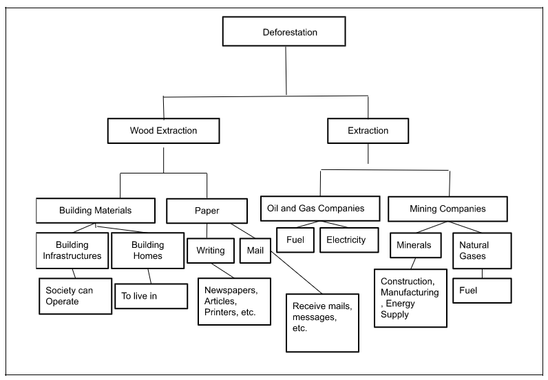

The following image depicts the storyboard that I created for our animation. The first frame depicts a rifle zoomed into a Rhino, ready to take the shot. The next frame is the poacher with the Rhino's horn standing in front of his poor and weak house. He then enters his home and looks in his fridge only to find milk and is left hunry with his stomach rumbling. The next drawing shows a picture of his family in order to explain the poachers circumstance. The second to last drawing is a scene where he meets with his boss but he isn't payed enough; however, he is forced to accpet because he needs money to feed his family. In the last scene the camera zooms out of the poachers house and reveals dozens of Rhino's dead.